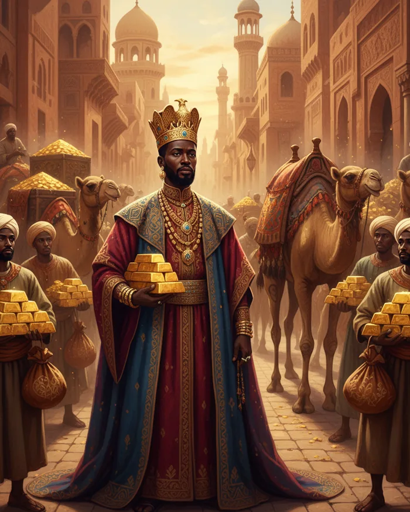
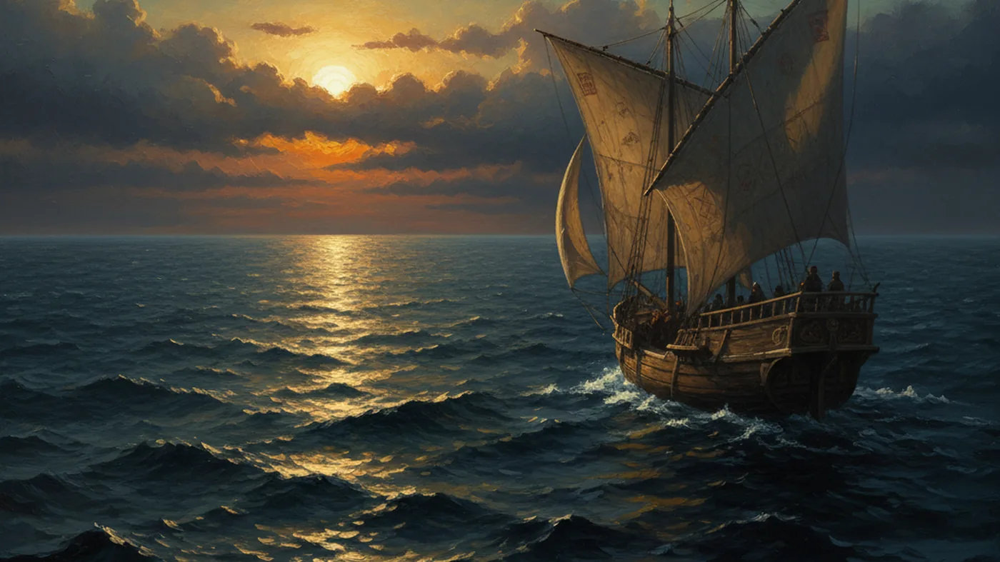
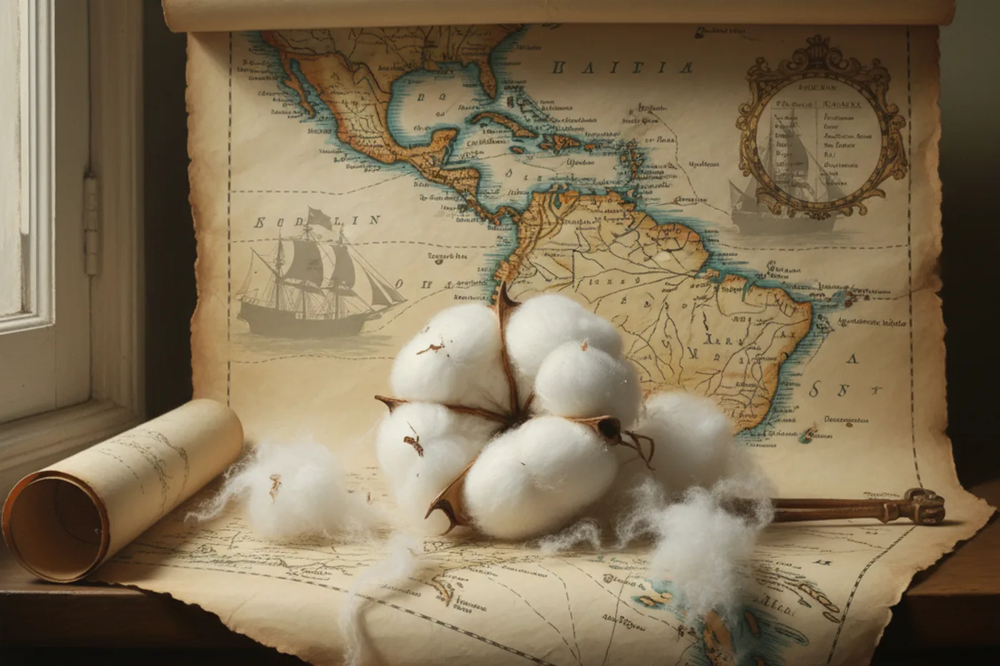
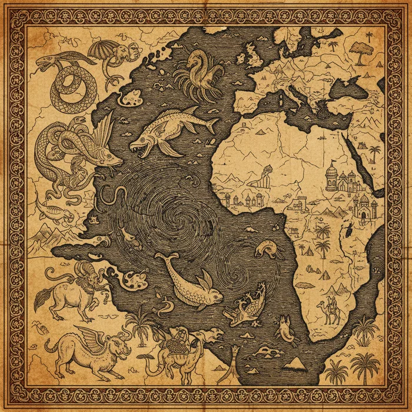

Kairo, 1324. Kota itu belum pernah melihat yang seperti ini.
Seorang raja Afrika berkulit hitam — Mansa Musa dari Kekaisaran Mali — singgah dalam perjalanan haji ke Mekah. Ia membawa rombongan 60.000 orang. 12.000 budak masing-masing membawa batangan emas. Unta-untanya mengangkut debu emas. Ia membagikan emas begitu banyak di jalanan Kairo sehingga nilainya anjlok dan baru pulih sepuluh tahun kemudian.
Tapi di tengah kemewahan itu, Mansa Musa melakukan sesuatu yang lebih menarik bagi kita: ia bercerita.
Kepada al-Umari, seorang pejabat Mesir yang kelak mewawancarai saksi-saksi yang hadir saat kunjungannya, Mansa Musa menjelaskan bagaimana ia naik takhta. Pendahulunya — Abu Bakr II — adalah seorang raja yang terobsesi dengan lautan. Ia percaya ada daratan di seberang Atlantik. Suatu hari, ia menyiapkan 200 kapal dan mengirim mereka ke barat dengan pesan: jangan kembali sebelum mencapai ujung laut.
Hanya satu kapal yang kembali. Awaknya melaporkan: armada lenyap ditelan arus.
Tapi Abu Bakr II tidak menyerah. Ia turun takhta. Ia menyerahkan kekuasaan kepada Mansa Musa. Lalu ia memimpin sendiri ekspedisi kedua: 2.000 kapal. Dan tidak pernah kembali.
Al-Umari mencatat percakapan ini. Catatannya masih ada.

Bukan Legenda, Tapi Juga Bukan Bukti
Mari kita jujur tentang apa yang kita punya.
Kita punya satu sumber primer. Bukan "konon" atau "kata orang." Al-Umari menulis ini dalam Masalik al-Absar setelah berbicara langsung dengan Mansa Musa. Sejarawan kontemporer yang mewawancarai saksi utama. Kalau kita menerapkan standar kritik sejarah yang adil, ini bukan legenda — ini kesaksian.
Tapi itulah yang kita punya. Hanya itu.
Tidak ada bangkai kapal. Tidak ada prasasti. Tidak ada perkakas Afrika di tanah Amerika yang bisa dikaitkan dengan ekspedisi ini. Tidak ada catatan dari sisi penerima — suku asli Amerika yang seharusnya bertemu rombongan 2.000 kapal Afrika tidak meninggalkan catatan tertulis, dan tradisi lisan mereka tidak menyebutnya.
Satu kesaksian yang sangat serius — tanpa satu pun barang bukti.
Inilah ketegangan di jantung seluruh perdebatan.
Tapi Abu Bakr II Bukan Satu-satunya
Tiga abad sebelum Mansa Musa, al-Masudi (w. 956 M) — geografer dan sejarawan Arab yang dijuluki "Pliny-nya Arab," merujuk pada naturalis Romawi yang menulis ensiklopedia raksasa tentang dunia — mencatat kisah yang lebih awal.
Dalam Muruj al-Dhahab-nya, ia menulis tentang Khashkhash ibn Sa'id ibn Aswad, seorang pelaut dari Cordoba, Andalusia. Ia berlayar ke barat melintasi "Lautan Kegelapan" — nama Arab untuk Atlantik — dan kembali dengan membawa harta.
Al-Masudi bukan penulis dongeng. Ia menghabiskan hidupnya berkeliling dunia, dari India sampai Afrika Timur, mencatat geografi dan sejarah. Tulisannya tentang tempat-tempat yang ia kunjungi sendiri terbukti akurat. Tapi untuk kisah Khashkhash, ia mencatat dari sumber kedua — seseorang yang mendengar dari seseorang. Satu lapis lebih lemah dari cerita Mansa Musa.
Sekali lagi: sumbernya ada. Isinya spesifik. Tapi tidak ada konfirmasi arkeologis.

Bukti yang Bukan Bukti (Tapi Layak Dicatat)
Lalu ada Leo Wiener. Profesor linguistik Harvard. Bukan Muslim. Bukan aktivis dakwah. Tahun 1920, ia menerbitkan Africa and the Discovery of America — tiga jilid tebal yang membandingkan bahasa, tanaman, dan artefak dari kedua sisi Atlantik.
Wiener mengklaim menemukan paralel linguistik antara bahasa Mandinka (Afrika Barat) dan bahasa penduduk asli Karibia. Ia mencatat bahwa tanaman tertentu — kapas, ubi jalar, mungkin juga tembakau — muncul di kedua sisi Atlantik sebelum Columbus. Bagaimana mungkin?
Argumen paling kuat dari jalur ini adalah kapas tetraploid. Tanaman ini adalah hibrida alami dari spesies kapas Afrika dan spesies kapas Amerika. Hibrida ini sudah ada di Amerika sebelum Columbus tiba. Bagaimana dua tanaman dari benua berbeda bisa kawin silang tanpa campur tangan manusia?
Mayoritas botanis berpendapat: biji kapas bisa terbawa arus laut, atau burung, atau — penjelasan yang lebih hemat — spesies itu terpisah jutaan tahun lalu saat benua masih menyatu, dan masing-masing berevolusi sendiri. Tidak ada ahli botani arus utama yang menganggap hipotesis "kapas dibawa manusia" sebagai penjelasan utama. Tapi mereka juga tidak bisa membuktikan sebaliknya. Perdebatan ini belum selesai.

Peta yang Jujur
Jadi apa yang sebenarnya kita tahu?
-
Sumber primer: Mansa Musa sendiri mengatakan pendahulunya berlayar ke Atlantik
Tidak ada bukti arkeologis. Satu sumber, tanpa konfirmasi. -
Sumber primer: Al-Masudi mencatat pelaut Cordoba abad ke-10 menyeberangi Atlantik
Al-Masudi menulis dari sumber kedua, bukan saksi langsung. -
Indikasi botani: Kapas hibrida Afrika-Amerika ada sebelum Columbus
Penjelasan non-kontak masih mungkin dan lebih hemat. -
Indikasi linguistik: Kata-kata Afrika Barat dan Karibia menunjukkan paralel (Wiener)
Metodologi dikritik terlalu longgar. -
Plausibilitas geografis: Arus Atlantik dari Afrika Barat langsung menuju Karibia
Perjalanan pulang mungkin mustahil tanpa pengetahuan navigasi yang canggih.
Ini bukan "terbukti." Tapi ini juga bukan "ngawur." Ini adalah sekumpulan petunjuk yang mengarah ke kemungkinan — bukan kesimpulan.

Yang Membuat Ini Berbeda dari Hoaks
Ada baiknya kita membedakan perdebatan ini dari klaim viral yang beredar di grup WhatsApp dan blog dakwah: "Kepala Suku Cherokee bernama Muhammad," "suku Indian pakai sorban," "perjanjian 1787 ditandatangani dengan nama Islam."
Semua itu hoaks. Suku asli Amerika sendiri menggugat penerbit buku teks yang menyebarkan klaim itu — dan menang.
Perdebatan Akademik
Sumber primer ada (al-Umari, al-Masudi)
Diperdebatkan di jurnal dan buku akademik
Ilmuwan non-Muslim terlibat dalam perdebatan
Kesimpulan: "menarik, belum terbukti"
Hoaks Viral
Tidak ada sumber primer
Disebarkan di blog salin-tempel
Hanya Muslim yang menyebarkan
Kesimpulan: "terbukti, pasti benar"
Perbedaan paling penting: dalam perdebatan akademik, ketiadaan bukti diakui. Justru di situlah letak kejujurannya.
Penutup: Hak untuk Dipercaya
Mungkin artikel ini tidak akan viral. Ia tidak menawarkan kepastian. Ia tidak memberi Anda bahan untuk berkata "Islam sampai Amerika duluan!" di kolom komentar. Ia hanya menawarkan apa yang sebenarnya dimiliki oleh sains: satu kesaksian yang menarik, beberapa petunjuk yang menggoda, dan ketidakmampuan untuk menyimpulkan.
Tapi justru di situlah letak integritasnya. Karena ketika kita berhenti mengklaim kepastian untuk hal-hal yang belum pasti, kita tidak kehilangan apa pun. Yang kita dapatkan adalah sesuatu yang lebih langka: hak untuk dipercaya.
— ALIM